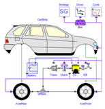
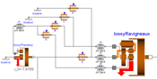
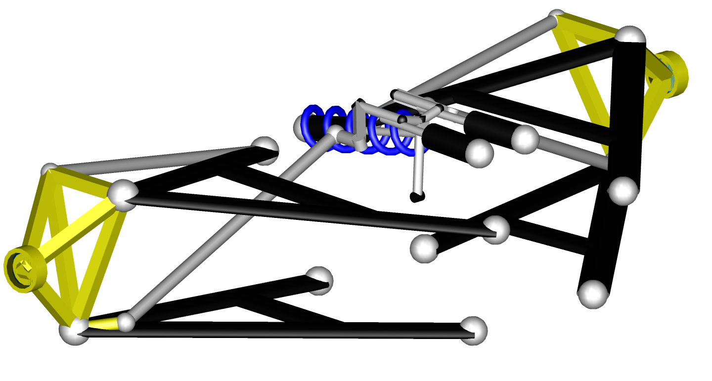
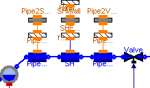
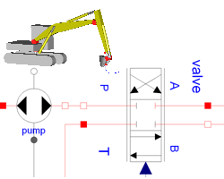
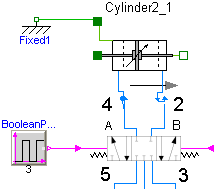
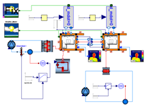

Overview of Modelica Libraries
Below a partial overview of about 30 free and commercial Modelica libraries is given.
More details and library downloads are available on the
library page.
The free libraries are usually available
under the Modelica License 2
(this license allows both open source and commercial usage, and you can
copy and modify models).
Content
1. Libraries for electric, electronic and magnetic components
2. Libraries for mechanical components
3. Libraries for fluid components
4. Libraries for control systems
5. Libraries for functions
6. Acknowledgment
| 1. Libraries for electrical, electronic and magnetic components | |
 |
Analog electric and electronic components Free library to model analog electrical circuits. Components: resistor, capacitor, transformers, diodes, transistors, transmission lines, switches, sources, sensors, etc. Components that have losses (e.g. resistor, transistor) have an optional heat port to connect to a thermal network defined by the Modelica.Thermal.HeatTransfer library. (Modelica Standard Library: Modelica.Electrical.Analog) |
 |
Digital electrical components Free library to model digital electrical circuits based on the VHDL standard. Components: Basic logic blocks with 9-value logic, delays, gates, sources, converters between 2-, 3-, 4-, and 9-valued logic, etc. (Modelica Standard Library: Modelica.Electrical.Digital) |
 |
Electrical machines Free library to model uncontrolled asynchronous-, synchronous-, and DC-machines (motors and generators) as well as 3-phase transformers. (Modelica Standard Library: Modelica.Electrical.Machines) |
 |
Lumped magnetic networks Free library to model electro-magnetic actuators based on the magnetic flux tubes concepts. Components Nonlinear shape, force, leackage, and material models. Material data for steel, electric sheet, pure iron, Cobalt iron, Nickel iron, NdFeB, Sm2Co17, and more. (Modelica Standard Library: Modelica.Magnetic.FluxTubes) |
|  |
Controlled electrical machines: Commercial library to model controlled electrical machines with quasi-stationary and transient models, such as controllers (voltage/frequency, field-oriented, speed/position), power electronics (AD/DC, DC/AC, DC/DC converters, PWM), energy storages (batteries, supercaps, fuel cells), etc. The library allows the simulation of hybrid electric vehicles and of new alternative concepts with electrical auxiliaries. (SmartElectricDrives library from AIT - Energy & Mobility, Austria) (SmartElectricDrives library from AIT - Energy & Mobility, Austria) |
2. Libraries for mechanical components |
|
|
|
1-dim. mechanical, translational systems Free library to model translational mechanical systems. Components: Sliding mass, mass with stops, spring, damper, etc. (Modelica Standard Library: Modelica.Mechanics.Translational) |
 |
1-dim. mechanical, rotational systems Free library to model rotational mechanical systems Components: Inertias, gears, planetary gears, speed/torque dependent friction (clutches, brakes, bearings, ...), etc. (Modelica Standard Library: Modelica.Mechanics.Rotational) |
  |
3-dim. mechanical systems Free library to model multi-body systems. Components: Joints, bodies, force and sensor elements. Joints can be driven by drive trains defined by Rotational library. Every component has a default animation. Components can be arbitrarily connected together. (Modelica Standard Library: Modelica.Mechanics.MultiBody) |
 |
Vehicle dynamics: Commercial Modelica library to model the dynamics of passenger cars and of trucks. Large library of components (chassis, suspensions, tyres, steering, driveline, brakes etc.), and templates to built-up own vehicle models and examples. (VehicleDynamics library from Modelon AB, Sweden) |
 |
Power trains and planetary gearboxes: Commercial library to model vehicle power trains and all type of planetary gearboxes. E.g. standard and planetary gears with losses, clutches with friction, flexible driveline models, automatic gearboxes, optional 3D effects (mounting on vehicle) (PowerTrain library from DLR-RM, Germany) |
 |
Flexible beams and FE-based flexible bodies (with stress stiffening): Commercial library to model large motions of beams and of flexible bodies exported from finite element programs. The flexible bodies can have a large reference motion and stress stiffening and softening terms are taken into account. Basically two components are provided: "Beam" to model Rayleigh beams and "ModalBody" to model order reduced finite element models based on the SID format. The preprocessor FEMBS from Intec is capable to generate an SID file from the FE programs ABAQUS, ANSYS, Nastran, I-DEAS, and PERMAS (with special order reduction methods, optional inclusion of stress stiffening terms and generation of animation information which is used from the FlexibleBodies library). (FlexibleBodies library (Beams, Beams and FE bodies) from DLR-RM, Germany) |
 |
Flexible bodies from Nastran, Genesis, and Abaqus: Commercial library to model flexible bodies in Modelica by using standard output files from Finite Element Analysis tools including Nastran, Genesis and Abaqus and uses these to define the flexible body in Modelica. These Finite element analysis tools already include the capability to reduce large, complex, finite element models to models consisting of a small number of boundary nodes, or attachment points, and a defined number of frequency modes. The FlexBody library is compatible with the standard Modelica MultiBody library. (FlexBody library from Claytex, U.K.) |
|  |
VDLMotorsports library: VDLMotorsports is an extension to the Vehicle Dynamics library and builds on the capabilities incorporated in the VehicleDynamics Library Cars and Cars Suspensions versions. It provides optimised double wishbone suspension models for motorsport applications. The suspension mechanisms include the full range of adjustments that are applied in a physically correct manner by defining the shim sizes to be used. (VDLMotorsports library from Claytex, U.K.) |
 |
Belt drive systems: Commercial library for the static and dynamic analysis of planar belt drive systems. Components: Belt pulleys (connected to a Frame from the MultiBody library), belt spans (idealized spring/damper elements), levers, endings, wraps, contact models, visualizers for animation, functions for belt calculations and interfaces for belt drive components. (Belts library from Frank Rettig, Germany). |
3. Libraries for fluid components |
|
 |
Fluid media Free, large library providing models and functions to compute media properties, such as h = h(p,T), d = d(p,T), for the following media:
(Modelica Standard Library: Modelica.Media) |
 |
1-dim. thermo-fluid flow Free library for thermo-fluid flow in networks of vessels, pipes, fluid machines, valves and fittings. All media from the Modelica.Media library can be used (so incompressible or compressible, single or multiple substance, one or two phase medium). (Modelica Standard Library: Modelica.Fluid) |
 |
Simple thermo-fluid pipe flow Free library to model thermo-fluid pipe flow in a simple way, especially to model cooling of machines with air or water (pipes, pumps, valves, ambient, sensors, sources) and lumped heat transfer with heat capacitors, thermal conductors, convection, body radiation, sources and sensors. (Modelica Standard Library: Modelica.Thermal.FluidHeatFlow/.HeatTransfer) |
|  |
Thermal power plants: Free library to model the dynamics of thermal power plants. The library has been developed to analyse the dynamic behaviour of plants, with the purpose of studying control system strategies and architectures. (ThermoPower library from Politecnico di Milano, Italy). |
 |
Air conditioning systems: Commercial library to model transient and steady state behavior of air conditioning systems. The library is available in two versions: automotive and as customized version, e.g. for residential A/C and heat pumps. The automotive version is, e.g., used by all German car manufacturers. Properties for Cryogenic fluids (Hydrogen, Nitrogen and Oxygen up to very high pressures and in liquid and two-phase states) are available as an add-on option. (AirConditioning library from Modelon AB, Sweden) |
|  |
Hydraulics Library: Commercial library to model hydraulic systems. Large library of components (cylinders, directional control valves, lines, accumulators, pumps, motors, sensors, etc.), many examples as starting points for own system models. (Hydraulics library from Modelon AB, Sweden) |
|  |
Pneumatics Library: Commercial library to model pneumatic systems. Large library of components (cylinders, directional control valves, lines, pumps, vane motors, sensors etc.), many examples as starting points for own system models. (Pneumatics library from Modelon AB, Sweden) |
 |
CombiPlant Library: Commercial library to model combined cycle and coal fired power plants, and many other thermal and process systems. Large library of components (heat exchangers, turbines, compressors, valves, heat recovery plant sections etc.), many working fluids for thermodynamic cycles, even unconventionel ones. (CombiPlant library from Modelon AB, Sweden) |
|  |
Thermal comfort feeling in air conditioning systems: Commercial library providing models to estimate the human comfort within an air-conditioned zone. It consists of four modules for weather, air conditioning system, zone, and human comfort. (HumanComfort library from XRG Simulation) |
4. Libraries for control systems |
|
  |
Input/output blocks Free library to model block diagrams and logical networks, e.g., integrator, PI, PID, transfer function, linear state space system, sampler, unit delay, discrete transfer function, and/or blocks, timer, hysteresis, nonlinear and routing blocks, sources, tables. (Modelica Standard Library: Modelica.Blocks) |
 |
Controller blocks with two levels of detail (continuous and discrete) Free library to model continuous and discrete controllers. The library contains about 20 input/output blocks of linear systems that are based on the different representation forms provided by the Modelica_LinearSystems2 library below. A unique feature of these blocks is that it is very convenient to quickly switch between a continuous and a discrete block representation. Also, templates are provide to quickly built-up standard controller structures. Blocks: Integrator, PID with anti-windup, StateSpace, Filter blocks, etc. (Modelica_LinearSystems2.Controller from DLR-RM, Germany) |
 |
Hierarchical state diagrams Free library to model hierarchical state diagrams. Modelica is used as synchronous action language, i.e. deterministic behavior is guaranteed (Modelica Standard Library: Modelica.StateGraph) |
 |
Safe hierarchical state diagrams with action blocks Free library providing components to model discrete event, reactive and hybrid systems in a convenient and safe way with deterministic hierarchical state diagrams. Basic components: Step, Transition, Parallel. The Parallel component is both used as "composite step" (so only one branch), as well as "parallel step" (so several execution branches). The branches can be synchronized or can run unsynchronized to each other. Blocks to define actions that depend on the active step (for Real, Integer, Boolean): MultiSwitch, OnDelay, TriggeredAdd, etc. Wrong state diagrams give a translation error (e.g. two initial steps). The number of event iterations is bounded, since every loop must have one delayed transition. Deterministic since using Modelica as action language (one variable is defined by one equation). (Modelica_StateGraph2 from DLR-RM, Germany and Dassault Systèmes AB, Sweden). |
5. Libraries for functions |
|
import Modelica.Math.Matrices;
A = [1,2,3;
3,4,5;
2,1,4];
b = {10,22,12};
x = Matrices.solve(A,b);
Matrices.eigenValues(A);
|
Functions operating on vectors and matrices, such as for solving linear systems, eigen and singular values etc., and functions operating on strings, streams, files, e.g., to copy and remove a file or sort a vector of strings. (Modelica Standard Library: Modelica.Math, Modelica.Utilities) |
 |
Functions for analysis and synthesis of continuous and discrete linear systems Free library providing different representations of linear, time invariant differential and difference equation systems. For example, record Modelica_LinearSystems2.StateSpace defines a linear time invariant differential equation system in state space form: der(x) = A * x + B * u
y = C * x + D * u
Operators are overloaded to work conveniently with these system descriptions in an
interactive environment, e.g., to multiply transfer functions or to operate on complex numbers.
About 180 functions are provided to operate
on these data structures, e.g., to compute eigen values, zeros, step responses,
to design pole-placement and LQG controllers, to plot step responses, frequency responses,
eigen values, to convert between different description forms, or to
generate a linear system description by linearization of a Modelica model.(Modelica_LinearSystems2 from DLR-RM, Germany) |
The development of the following libraries
- Modelica.Electrical.Analog
- Modelica.Electrical.Digital
- Modelica.Fluid
- Modelica_LinearSystems2
- Modelica_StateGraph2
have been partially funded in the EUROSYSLIB ITEA2 project by
 |
BMBF, for ABB AG, DLR e.V., Fraunhofer IIS/EAS, Siemens, XRG Simulation (BMBF Förderkennzeichen: IS07003A). |
 |
VINNOVA, for Lund University. |
In the text above the following trademarks are referenced:
Modelica® is a registered trademark of the Modelica Association.
Simulink® is a registered trademark of The Mathworks Inc.